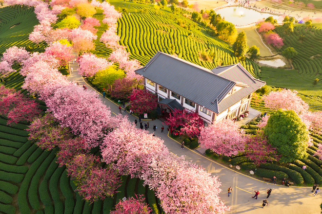

Công ty du lịch Haonf Mỹ vừa giới thiệu tour mới khám phá đất nước Trung Hoa xinh đẹp. Đểm đùng chân đầu tiên là Bắc Kinh, chinh phục Vạn Lý Trường Thành đồ sộ. Đến Thập Tam Lăng nghe những câu chuyện huyền bí trong quá trình xây lăng cùng với lời nguyên cura các thầy phá xưa. Tham quan Cung Điện Mùa Hè-noi Từ Hy Thái Hậu cho "đào hồ, đắp núi, xây chùa".
Đặc biệt, du khach đến thăm quảng trường lớn nhất thế giới: Thiên An Môn- nơi gây chấn động dư luận quốc tế một thời, ghé qua Cố Cung- biểu tượng của nền phong kiến lầu đời.Món vịt quay Bắc Kinh sẽ làm cho du khách khó quên trong chuyến hành trình.
Ngoài ra, khach còn được chạm tay vào quốc bảo Trung Hoa. Tiếp đó, đến Thượng Hải để tham quan vườn
Dự Viên với kiến trtusc hài hòa. Rồi dạo quanh bến Thương Hải ngằm nhìn khu lầu Vạn Quốc. Bất ngờ hơn, du khách đi đường hầm xuyên qua sông Hoàng Phố.
Đến Hang Châu, nghe kế về sự tishc các cây cầu"Cầu gây mà không gãy, cầu dài mà không dài" -gắn liền với chuyện Lương Sơn Bá, Chúc Anh Đài. Du khách có dịp mua sắm hóa thích từ quần áo, mỹ phẩm, đồ lưu niệm, đặc biệt là ngọc trai quý hiếm... Trung Hoa cố kinh, Trung Hoa hiện đại chắc chắn là đến khó quên trong mùa hè.